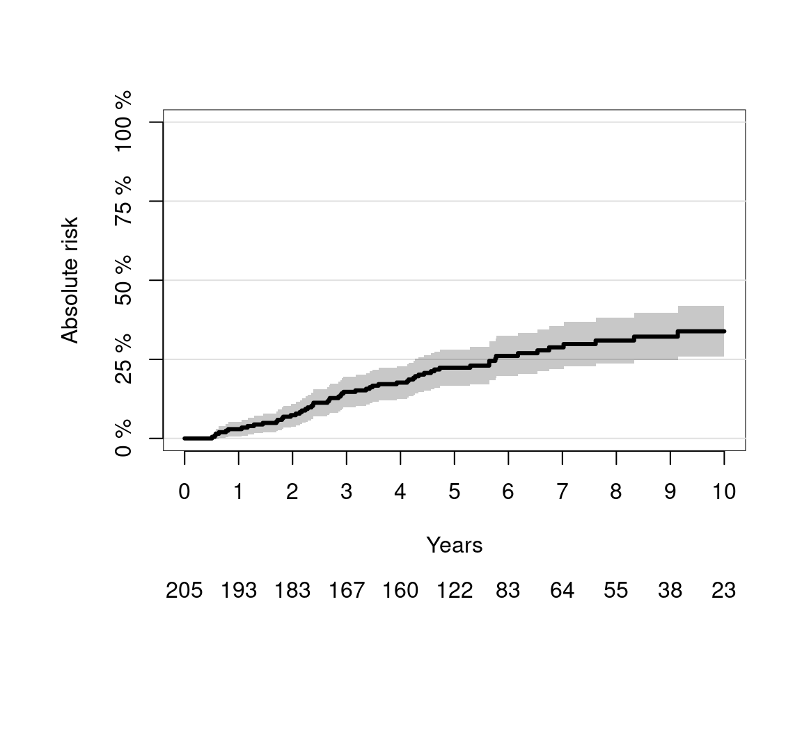

Cause-Specific Hazard Regression is a statistical method used in survival analysis when there are multiple possible types (or causes) of failure or events, and the goal is to model the risk (hazard) of experiencing a specific type of event over time, while accounting for the presence of other competing events.
Overview
This models the cause-specific hazard (the rate of a specific event among those still at risk and event-free) for each competing event separately, typically using Cox proportional hazards models. The CIF is then derived by integrating the cause-specific hazards with the overall survival function. Coefficients represent hazard ratios for the effect of covariates on the event rate. It is ideal for etiologic questions (understanding causal mechanisms) but does not directly model absolute risks, which can lead to indirect interpretations in prediction. For example, in heart failure data, this approach might show no significant effect of cancer on cardiac death hazard.
Key Concepts
Competing Risks Setting:
In many real-world scenarios, individuals are at risk of more than one mutually exclusive event.
Example: In a study of cancer patients, the outcome of interest might be death due to cancer, but patients could also die from heart disease, accidents, or other causes. These are competing risks because the occurrence of one event (e.g., death from heart disease) prevents the observation of the other (e.g., death from cancer).
Cause-specific Cox regression
Given covariates \((X, Z)\), let \(S_0(t|x, z) = P(T > t|X = x, Z = z)\) denote the event-free survival function and \(F_j(t|x, z) = P(T \leq t, D = j|X = x, Z = z)\) the cumulative incidence function for event \(j\). The cause-specific hazard rates are defined as \(\lambda_{j,z}(t|x) = \frac{dF_j(t|x, z)}{S_0(t|x, z)}\) (Andersen et al., 1993). We also denote the cumulative hazard rates by \(\Lambda_{j,z}(t|x) = \int_0^t \lambda_{j,z}(s|x)\,ds\). The stratified Cox regression model (Cox, 1972) for cause \(j\) is given by
\(\beta_j = (\beta_{1j}, \dots, \beta_{pj})^\top\) is a \(p\)-dimensional vector of regression coefficients (the log-hazard ratios), and \(\{\lambda_{0j,z}(t) : z = 1, \dots, L\}\) a set of unspecified baseline hazard functions.
Predicting the absolute risk of an event
The cause-specific Cox regression models can be combined into a prediction of the absolute risk of an event of type 1 until time \(t\) conditional on the covariates \(x, z\). For the case where \(K = 2\) the absolute risk formula of Benichou and Gail (1990) is given by:
where \(s-\) denotes the right sided limit, e.g. \(\Lambda_{1,z}(s^- |x) = \lim_{v\to s, v<s} \Lambda_{1,z}(v|x)\). The absolute risk accumulates over time the product between the event-free survival and the hazard of experiencing the event of interest, both conditional to the baseline covariates and to the strata variable. The event free survival can be estimated from the cause-specific hazards using the product integral estimator:
which is asymptotically equivalent to the product-limit estimator if the distribution of the event times is continuous. Using the product integral estimator ensures that \(S(t|x, z) + F_1(t|x, z) + F_2(t|x, z)\) equals exactly 1. This is a desirable property since the sum of the transition probabilities over all possible transitions should sum to one.
Advantages
Directly models the biological or clinical mechanism of a specific event type.
Coefficients have a clear interpretation in terms of instantaneous risk.
Works well with standard survival software (e.g., coxph in R, with appropriate censoring coding).
Limitations
Does not directly estimate the cumulative incidence (i.e., the actual probability of experiencing the event by time (t)), because it ignores the impact of competing risks on the overall event probability.
For predicting absolute risk, Fine-Gray subdistribution hazard models are often preferred.
Results can be sensitive to assumptions about censoring (e.g., assuming competing events are non-informative).
Example
Suppose you study patients after a bone marrow transplant: - Event of interest: relapse of leukemia. - Competing event: death without relapse.
A cause-specific hazard model for relapse would: - Treat death without relapse as censoring at the time of death. - Estimate how factors (e.g., age, donor match) affect the instantaneous risk of relapse, among patients who have neither relapsed nor died up to that time.
Cause-Specific Hazard Regression for Competing Risks in R
In competing risks analysis, cause-specific hazard (CSH) regression models the instantaneous risk of a specific event type, treating other event types as censoring. This tutorial demonstrates how to fit, interpret, and visualize CSH models using the Melanoma dataset from the `riskRegression`` package.
Install Required R Packages
Following R packages are required to run this notebook. If any of these packages are not installed, you can install them using the code below:
n the period 1962-77, 205 patients with malignant melanoma (cancer of the skin) had a radical operation performed at Odense University Hospital, Denmark. All patients were followed until the end of 1977 by which time 134 were still alive while 71 had died (of out whom 57 had died from cancer and 14 from other causes).
time: time in days from operation
status: a numeric with values 0=censored 1=death.malignant.melanoma 2=death.other.causes
event: a factor with levels censored death.malignant.melanoma death.other.causes
invasion: a factor with levels level.0, level.1, level.2
ici: inflammatory cell infiltration (IFI): 0, 1, 2 or 3
CSC() provides Cause-specific Cox proportional hazard regression with riskRegression utilities. CSC() the argument formula is used to define the outcome variables with the help of the function prodlim::Hist().
Here is an example of fitting a cause-specific hazard model using riskRegression::CSC()
Code
cfit0 <-CSC(formula =Hist(time,status) ~ age + logthick + epicel +strata(sex), data = Melanoma)coef(cfit0)
$`Cause 1`
age logthick epicelpresent
0.01548722 0.68178505 -0.73848649
$`Cause 2`
age logthick epicelpresent
0.07680909 0.04750975 0.31497177
*Note**: Hist() is from prodlim (loaded with riskRegression) and handles competing risks event history.
Code
h <-with(Melanoma, prodlim::Hist(time,status))h
Right-censored response of a competing.risks model
No.Observations: 205
Pattern:
Cause event right.censored
1 57 0
2 14 0
unknown 0 134
If only one formula is provided, the CSC() function will use the same baseline covariates and strata variables for all cause-specific Cox regression models. Instead one may feed a list of formulas into the argument formula, one for each cause:
Code
cfit1 <-CSC(formula =list(Hist(time,status) ~ age + logthick + epicel +strata(sex), Hist(time,status) ~ age +strata(sex)), data = Melanoma)coef(cfit1)
$`Cause 1`
age logthick epicelpresent
0.01548722 0.68178505 -0.73848649
$`Cause 2`
age
0.07919648
Note that the selection of baseline covariates for each cause in this example is not guided by clinical or statistical rationale; it serves solely to demonstrate the software’s capabilities. The causes are automatically ordered based on the levels of the status variable if it is a factor; otherwise, they are sorted using sort(as.character(unique(status))). This ordering is stored in cfit1[["causes"]]. Consequently, the first formula fits a Cox model for the first cause, the second formula for the second cause, and so forth.
Internally, CSC() generates a dummy variable for each cause and invokes the function specified by the fitter argument on an appropriately formatted Surv() object. By default, cause-specific Cox models are fitted using survival::coxph(). Users can alternatively specify a different fitting function via the fitter argument, such as cph.
Absolute risk (CIF) plots can be created using prodlim package. Absolute risk is the probability of experiencing a specific event by a certain time, accounting for competing risks.
Code
library(prodlim)plot(prodlim(Hist(time,status) ~1, data = Melanoma),atrisk.at =seq(0,3652.5,365.25), xlim =c(0,3652.5),axis1.at =seq(0,3652.5,365.25), axis1.lab =0:10,xlab ="Years", ylab ="Absolute risk", cause =1)

Predicting Absolute Risk from Cause-Specific Hazard Models
The object returned by CSC() is of class "CauseSpecificCox". The next step involves invoking the associated predict() method. This requires three additional arguments beyond the CSC object: newdata, times, and cause.
newdata must be a data.frame containing the covariates \(X\) and \(Z\) in the same structure as the data used to fit the CSC() model.
cause specifies the event type of interest (\(D\)).
times is a vector of prediction time point(s), each serving as the upper limit \(t\) in formula (2).
The predict() method then calculates the absolute risk (per formula (2)) for each row in newdata and each specified value in times.
Code
newdata <-data.frame(age =c(45,67), logthick =c(0.1,0.2), epicel =c("present","not present"), sex =c("Female","Male"))pfit1 <-predict(cfit1, newdata = newdata, cause =1, times =c(867,3500))print(pfit1)
observation age logthick epicel sex times strata absRisk
<int> <num> <num> <char> <char> <num> <fctr> <num>
1: 1 45 0.1 present Female 867 sex=Female 0.021
2: 2 67 0.2 not present Male 867 sex=Male 0.149
3: 1 45 0.1 present Female 3500 sex=Female 0.117
4: 2 67 0.2 not present Male 3500 sex=Male 0.428
Standard errors and confidence intervals for the absolute risk can be obtained setting the argument se to TRUE:
Code
pfit2 <-predict(cfit1, newdata = newdata, cause =1, times =c(867,3500), se =TRUE)print(pfit2)
The components $absRisk, $absRisk.se, $absRisk.lower, and $absRisk.upper are matrices in which each row corresponds to an observation in newdata and each column corresponds to a time point in the times vector. These matrices preserve the original ordering of newdata and times. To easily extract specific subsets of the results, first convert the output using as.data.table.predictCSC(), which combines them into a single "data.table" object. Here is an example:
Code
library(data.table)
Attaching package: 'data.table'
The following objects are masked from 'package:lubridate':
hour, isoweek, mday, minute, month, quarter, second, wday, week,
yday, year
The following objects are masked from 'package:dplyr':
between, first, last
The following object is masked from 'package:purrr':
transpose
In the same way confidence bands can be obtained by setting the argument band to TRUE:
Code
vec.times <- cfit1$eventTimes pfit1band <-predict(cfit1, newdata = newdata, cause =1, times = vec.times, se =TRUE, band =TRUE)
Code
figure3 <-autoplot(pfit1band, band =TRUE, ci =TRUE)$plot
Warning: `aes_string()` was deprecated in ggplot2 3.0.0.
ℹ Please use tidy evaluation idioms with `aes()`.
ℹ See also `vignette("ggplot2-in-packages")` for more information.
ℹ The deprecated feature was likely used in the riskRegression package.
Please report the issue at
<https://github.com/tagteam/riskRegression/issues>.
Cause-Specific Hazard Regression is a foundational tool in competing risks analysis that models the instantaneous risk of a specific event type, treating other events as censoring. It is ideal for understanding etiology or mechanisms but should be complemented with cumulative incidence functions (CIFs) for risk prediction. This tutorial demonstrated how to fit, interpret, and visualize cause-specific hazard models using the riskRegression package in R, providing a practical framework for analyzing competing risks data. At the end of this tutorial, you should be able to:
Understand the concept of cause-specific hazards in competing risks
Fit cause-specific hazard models using riskRegression::CSC()
Predict absolute risks (CIFs) from cause-specific hazard models
Resources
Rosthøj, S., & Keiding, N. (2017). Competing risks: A simple re-parametrization of the cause-specific proportional hazards model. Research Report No. 62, Department of Mathematical Sciences, Aalborg University. https://vbn.aau.dk/ws/portalfiles/portal/271536290/RJ_2017_062.pdf
Putter, H., Fiocco, M., & Geskus, R. B. (2007). Tutorial in biostatistics: Competing risks and multi-state models. Statistics in Medicine.
3 Andersen, P. K., & Keiding, N. (2012). Interpretability and importance of functionals in competing risks and multi-state models. Statistics in Medicine.